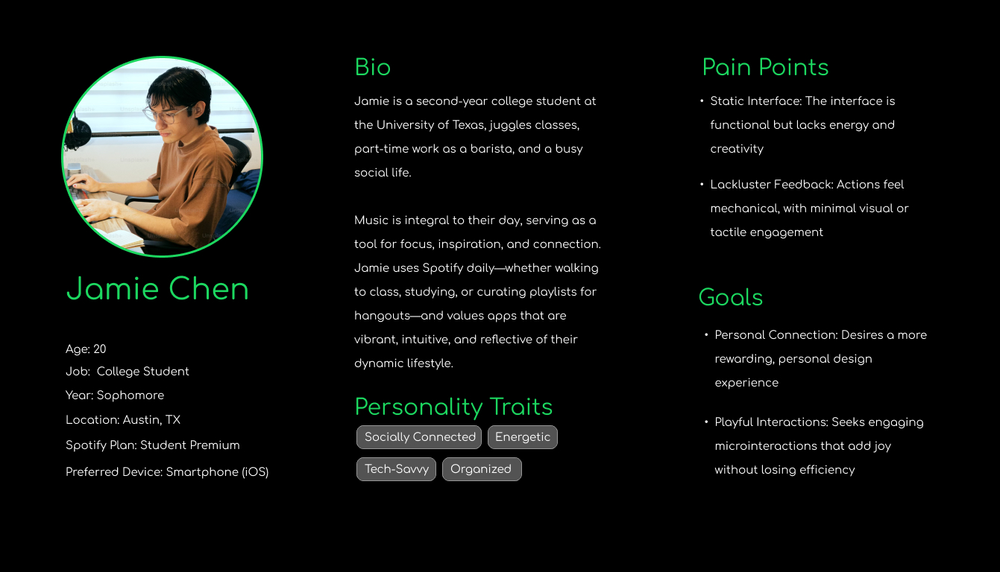

The Overview
Introduction
This case study showcases the final project for my IDM241 class and highlights the process and development of how design decisions were made to enhance the interface of the popular platform "Spotify". I focused on improving Spotify's microinteractions to create more joyful user experiences while preserving efficiency and functionality most daily users rely on. I navigated this project through iterative stages of ideation and exploration, aiming to develop concepts that strengthen the emotional bond between users and the brand when they open the interface. By analyzing Spotify's core functionalities, I identified areas for improvement and bridged those gaps with redesigns that would bring both creativity and usability to the table. Throughout, I made sure I stayed true to Spotify's brand identity but added in a touch of flair to elevate interaction quality and user satisfaction.
Context & Challenge
Background
For my final project for my IDM241 class, also known as Microinteractions, I set out to evaluate and redesign an interface to enhance at a microinteraction level. I chose Spotify, specifically narrowing in on the album container and its related elements, to explore how subtle design changes could strike a balance between creativity and functionality. The class was structured into 10 weeks and a timeline of six assignments lead by Professor Jervis Thompson to keep us on track and steady towards our final build. This approach allowed me to fully analyze and refine my design choices while also developing meaningful solutions.
- Alpha - Description
- Alpha - Build
- Beta - Description
- Beta - Build
- Final - Description
- Final - Build
The Problem
Spotify is a well-designed website known for its sleek look and used widely by many. However, the issue I faced when using it is the lack of engagement in the interactive elements. It seemed to have everything but the spark of joy when users interacted with the interface itself. Music plays a huge role in people's daily lives already and I saw this as an opportunity to add subtle yet engaging microinteractions. My challenge was to infuse these interactions with a touch of personality while ensuring they remained efficient and aligned with Spotify’s minimalist aesthetic. Functionality was my priority, but I aimed to create a more immersive and enjoyable experience for users.
Goals & Objectives
From the outlined problem, I established clear goals to guide the redesign to ensure the final outcome successfully incorporates engaging and purposeful microinteractions. The focus of the project was on the album container and its related elements, with an emphasis on adding touches of personalities while preserving the core efficiency of each interaction. This came down to five main buttons in the container: the "Play" button, the "Shuffle" button, the "Heart" button, the "Options" button, and the "Album Cover" button.
I evaluated all of these button's triggers, rules, feedback and loops and modes to carefully understand how each button functioned and understand areas for improvement. The overall goal was to develop new designs that would feel meaningful for users while also fostering a stronger connection towards the brand and music.
3Process & Insight
Target Audience
This case study's target audience centers around young, tech-savvy individuals who integrate music into their daily lives for focus, inspiration, and social connection. More specifically, the enhancements are designed for college students and young adults, like the user persona Jamie Chen shown below. These users see Spotify as an essential companion in managing their hectic schedules, balancing academics, part-time jobs, social gatherings, and more. They engage with the platform not only to boost productivity but also as a means of personal expression.
Ideation and Concept Development
During brainstorming, I explored bold ideas like animated soundwaves for the Shuffle button or dynamic movement for the Album Cover. Inspired by the goal of fostering a stronger relationship between users and music, I considered ways to connect these microinteractions to the musical experience itself. My aim was to make the interactions both meaningful and fun. However, as I evaluated these initial concepts, I realized they felt overly complex and didn’t neccessarily align with Spotify’s sleek, minimalist design. I had to take a step back and think about the functionality and the practicality of the animations I envisioned. Through iterative sketching and wireframing, I refined my ideas to focus on smaller, meaningful changes, such as hover effects, color transitions, and pulse animations.
Design and Prototyping
Using Figma and JavaScript, I developed interactive prototypes for each button. While working on the Shuffle button, I faced significant challenges with the arrow animations I initially envisioned. My original concept involved separating the two arrows and having them change in y-positions to create a dynamic effect. However, during coding, I encountered issues with the design's practicality and performance. The timing of the y-position transitions also disrupted the button’s core efficiency, which was a priority I did not want to compromise. I had to step back and rethink my approach, looking for a meaningful animation but yet also what could be still engaging. Eventually, I settled on a reflective animation for the arrows. This solution felt simpler but still added a fun, interactive touch. To tie the redesign more closely to Spotify’s branding, I also added a color change, with the button turning Spotify’s iconic green when activated.
The Solution
To enhance engagement and address the absence of compelling microinteractions in Spotify’s interface, I focused on redesigning five essential elements within the album container: the Play, Shuffle, Heart, Options buttons, and the Album Cover. Each redesign was thoughtfully developed to introduce subtle personality while preserving the platform’s core functionality and adhering to Spotify’s sleek, minimalist branding.
"Play" Button Design
I introduced a subtle scale-up animation on hover to give the Play button a more tactile feel and provide users with visual feedback. Previously, the button felt static, with no interaction cues to guide the user. To enhance the sense of completion, I added a pulsing ring transition on click, reinforcing the action in a subtle but satisfying way. This redesign makes the Play button feel more responsive and connected to the music-playing experience.
"Shuffle" Button Design
The original Shuffle button used a small dot to indicate activation, which, while functional, lacked engagement. I addressed this by implementing a reflective animation on activation, adding a touch of movement and playfulness without disrupting usability. Additionally, the button changes to Spotify’s iconic green to further signify when it’s enabled. These changes improve visibility and give the Shuffle button a more dynamic presence.
"Heart" Button Design
I replaced the current add/plus icon with the traditional heart icon, a nostalgic feature familiar to long-time Spotify users. To amplify the emotional impact, I added a soft pulse animation on click, making the action feel more meaningful. To enhance the "spark of joy," I also incorporated a confetti effect to celebrate each click, aligning the interaction with the emotional resonance of saving a favorite song.
"Options" Button Design
Previously, the Options button provided no interactive feedback, making it feel disconnected from the rest of the interface. I introduced a small bounce animation on hover to give the button a playful flair while keeping the interaction smooth and non-intrusive. This small yet thoughtful enhancement improves accessibility and adds a touch of personality, aligning with Spotify’s sleek aesthetic.
"Album Cover" Design
The Album Cover interaction originally lacked interactivity, missing an opportunity to engage users further. I implemented a click-to-reveal interaction, allowing users to click on the cover to access additional details about the album. This intuitive change makes the browsing experience more interactive, giving users deeper insights into their favorite music in a seamless way.
The redesigned elements stay true to Spotify’s sleek and minimalist aesthetic while infusing personality and delight into the user experience. By addressing the absence of engaging microinteractions, these changes make the interface more interactive and emotionally resonant without compromising efficiency or functionality.
Explore the full final build here → Final Build
The Results
Conclusion
In the end, this project was a rewarding opportunity to enhance Spotify’s interface by focusing on the lack of engaging microinteractions. By redesigning the Play, Shuffle, Heart, Options buttons, and Album Cover, I introduced subtle but meaningful updates that improved user engagement while preserving Spotify’s clean and minimalist aesthetic. These enhancements not only make the interface feel more dynamic and interactive but also help foster a deeper emotional connection between users and their music.
The process really pushed me to think critically about how to balance creativity and functionality. I learned that through each iteration, it allowed me to refine my problem-solving skills and gain a deeper understanding of user-focused design and interactive prototyping.
Reflecting on the outcome, I’m proud of how the redesign complements Spotify’s branding and creates a more enjoyable experience for users. This project deepened my understanding of the power of small design elements to create meaningful, joyful user experiences. I believe these changes successfully bridge the gap between usability and emotional connection, ensuring a more engaging and intuitive platform for Spotify’s users.